Contents
homework 3
Bailey Waterman and Keshuai Xu
clear variables, clc, close all
Problem 4
%Create a function to write down the differnetial equations function state_dot = ins_fun(t,state_xi, DATA) %Time is always the first variable, state you're trying to integrate is %second input % need accel_meas_t from accel_meas % need omega_iee from rate_gyros_meas %pull out correct column current_timestamp_col = find((t >= DATA.time_stamp), 1, 'last'); accel_meas_t = DATA.accel_readings(:, current_timestamp_col); omega_iee = DATA.gyro_readings(:, current_timestamp_col); grav_tt = [0; 0; 9.81]; omega_icc = [0, 0, 2*pi/86400]'; % posn_tt = state_xi(1:3); vel_tt = state_xi(4:6); yaw_321 = state_xi(7); pitch_321 = state_xi(8); roll_321 = state_xi(9); mu_lat = deg2rad(42.271167); mu_long = deg2rad(-71.807627); % 3-2 rotation involving latitude and longitude Rct = [cos(-(pi/2 + mu_lat)) 0 -sin(-(pi/2 + mu_lat)); 0 1 0; sin(-(pi/2 + mu_lat)) 0 cos(-(pi/2 + mu_lat))] * ... [cos(mu_long) sin(mu_long) 0; -sin(mu_long) cos(mu_long) 0; 0 0 1]; Rte = ... [1 0 0; 0 cos(roll_321) sin(roll_321); 0 -sin(roll_321) cos(roll_321)] * ... [cos(pitch_321) 0 -sin(pitch_321); 0 1 0; sin(pitch_321) 0 cos(pitch_321)] * ... [cos(yaw_321) sin(yaw_321) 0; -sin(yaw_321) cos(yaw_321) 0; 0 0 1]; % Ret = inv(Rte); % 321 rotation involving yaw, pitch, and roll Rce = Rte * Rct; % define correctly from the previous two omega_itt = Rct * omega_icc; H_321 = [-sin(pitch_321) 0 1; sin(roll_321)*cos(pitch_321) cos(roll_321) 0; cos(roll_321)*cos(pitch_321) -sin(roll_321) 0]; posn_dot = vel_tt; vel_dot = Rte \ accel_meas_t + grav_tt - 2*cross(omega_itt, vel_tt); angles_dot = H_321 \ (omega_iee - Rce*omega_icc); state_dot = [posn_dot; vel_dot; angles_dot];
p4_data = load('hw3_p4.mat'); y0 = [p4_data.ptt_0; p4_data.vtt_0; p4_data.yaw_0; p4_data.ptc_0; p4_data.rol_0]; [t_sim, y_sim] = ode45(@(t,y) ins_fun(t,y,p4_data), p4_data.time_stamp, y0); figure(); plot3(y_sim(:,1),y_sim(:,2),y_sim(:,3)); title('position trajectory') figure(); plot(t_sim, y_sim(:,4:6)); xlabel('time (sec)'); ylabel ('velocity (m/s)'); title('velocity'); figure(); plot(t_sim, rad2deg(y_sim(:,6:9))); xlabel('time (sec)'); ylabel ('euler angles (deg)'); title('euler angles'); legend ('yaw(psi)','pitch(theta)','roll(phi)')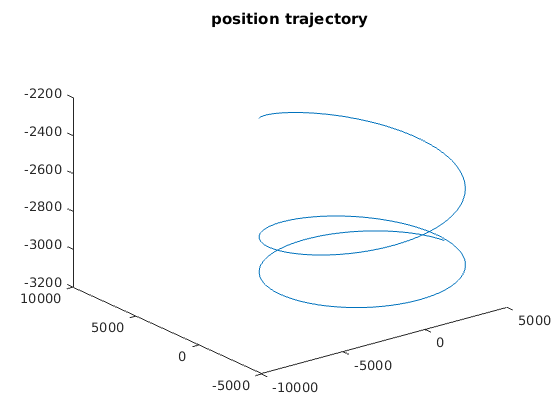 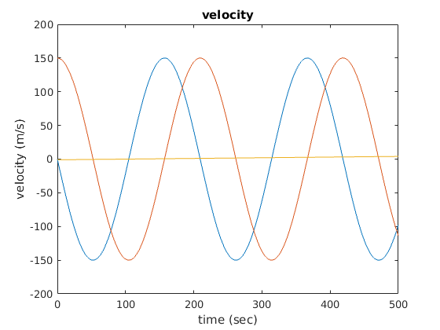 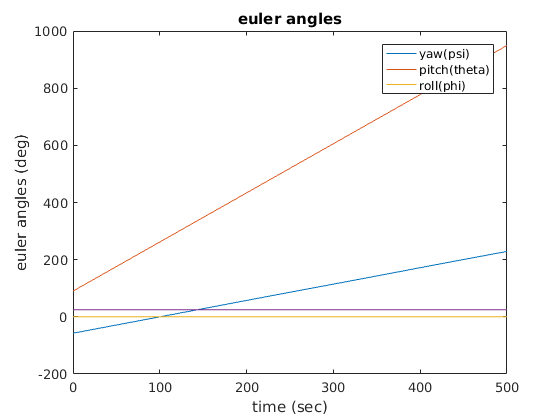
problem 6
p6_data = load ('hw3_p6.mat'); % We scaled the m to km to fix bad scaling t0 = 288.16; % Kelvin a1 = -6.5; % Kelvin/km. % units in Kelvin, deg, km R = sparse(diag([2 * ones(1500,1); 0.5 * ones(1500,1); 0.1 * ones(2000,1)].^2)); offset = [- t0 * ones(1500, 1); zeros(3500,1)]; scale = [ones(3000,1); 1e-3 * ones(2000,1)]; z = p6_data.measurements .* scale + offset; C = sparse([a1 * ones(1500,1); ones(1500,1) * 180 / (pi * 1e1); ones(2000,1)]); xi_hat = inv(C' * inv(R) * C ) * C' * inv(R) * z; % km xi_hat_m = xi_hat * 1e3 % m
xi_hat_m = 996.7334
problem 7
The trajectory is captured walking in a ~10 m hall way back and forth. at end of the straight segment I always turned around in z+ direction.
clear variables close all data = csvread('hw3q7_2.csv',1,0); t = data(:, 1); figure(); plot(t,data(:, 2:4)); xlabel('time (sec)'); ylabel ('proper acceleration (m*s^-2)'); legend ('x','y','z') figure(); plot(t,data(:, 5:7)); xlabel('time (sec)'); ylabel ('gyro (rad/s)'); legend ('wx','wy','wz') figure(); plot(t,data(:, 8:10)); xlabel('time (sec)'); ylabel ('magnetometer (uT)'); legend ('x','y','z') figure(); plot(t,data(:, 11:13)); xlabel('time (sec)'); ylabel ('heading from tilt corrected magnetometer (deg)'); legend ('roll','pitch','yaw') figure(); plot(t,0.01 * data(:, 14:15)); xlabel('time (sec)'); ylabel ('deg'); legend ('lat','long') figure(); plot(t,data(:, 16)); xlabel('time (sec)'); ylabel ('altitude (cm)'); figure(); plot(t,data(:, 17)); xlabel('time (sec)'); ylabel ('speed (kt)'); figure(); plot(t,data(:, 18)); xlabel('time (sec)'); ylabel ('heading (deg)');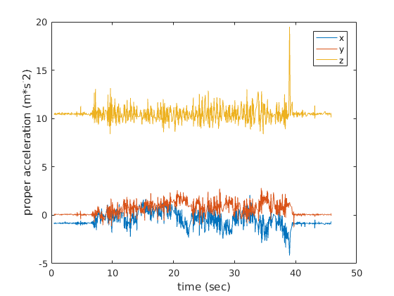 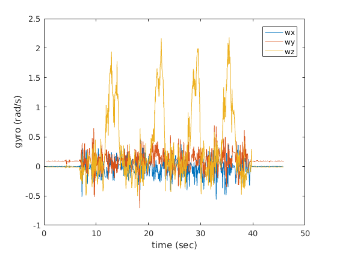 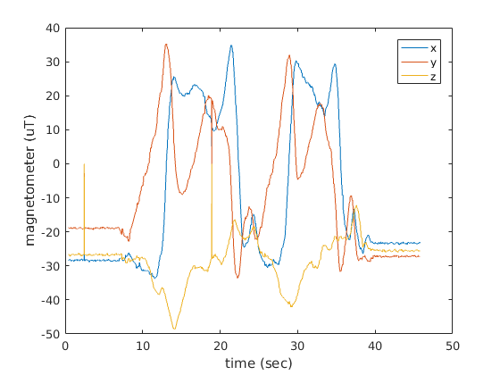 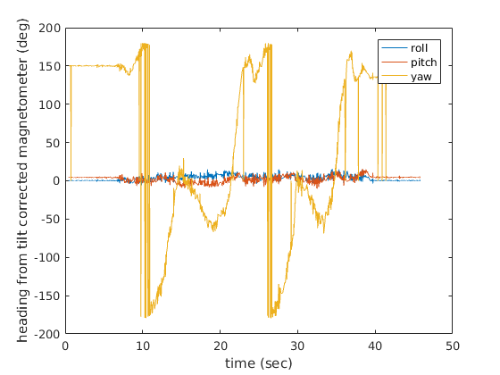 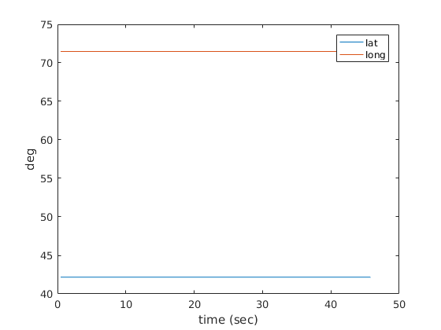 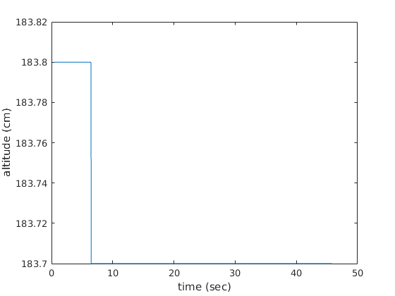 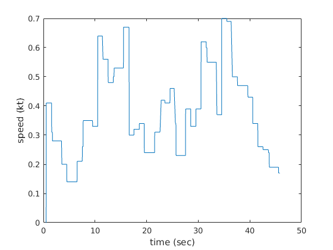 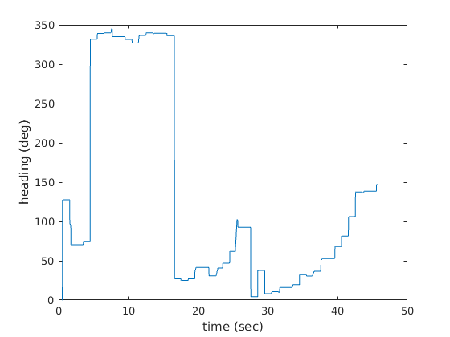
problem 8
The calculated trajectory reflected the turning, but the acceleromter bias caused position and linear velocity drift. The gyro also exhibits bias.
y0 = [zeros(3,1);zeros(3,1); [0; 0; pi]]; p7_data.time_stamp = data(:, 1)'; p7_data.accel_readings = data(:, 2:4)'; p7_data.gyro_readings = data(:, 5:7)'; [t_sim, y_sim] = ode45(@(t,y) ins_fun(t,y,p7_data), p7_data.time_stamp, y0); figure(); plot3(y_sim(:,1),y_sim(:,2),y_sim(:,3)); title('position trajectory') figure(); plot(t_sim, y_sim(:,4:6)); xlabel('time (sec)'); ylabel ('velocity (m/s)'); title('velocity'); figure(); plot(t_sim, rad2deg(y_sim(:,6:9))); xlabel('time (sec)'); ylabel ('euler angles (deg)'); title('euler angles'); legend ('yaw(psi)','pitch(theta)','roll(phi)')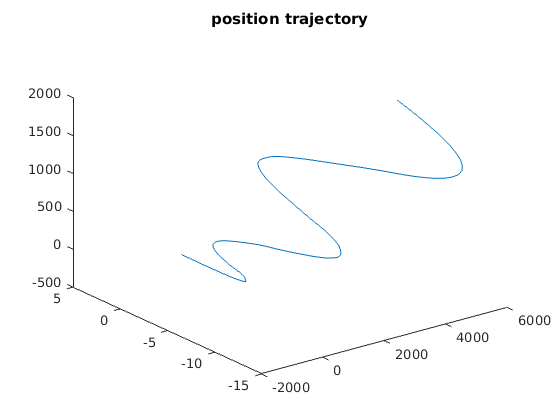 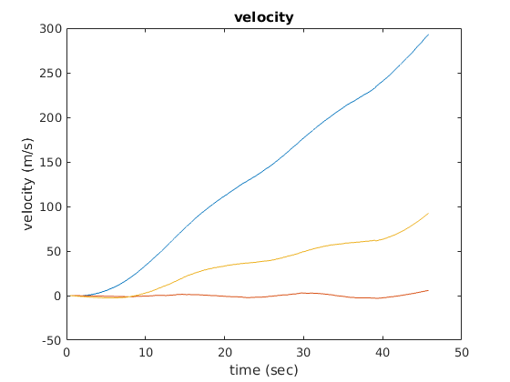 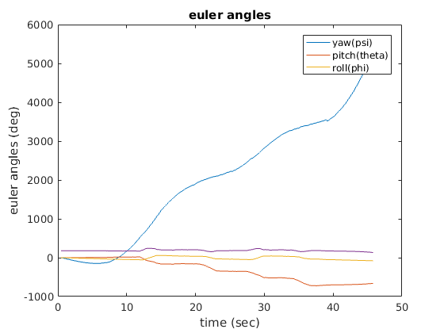